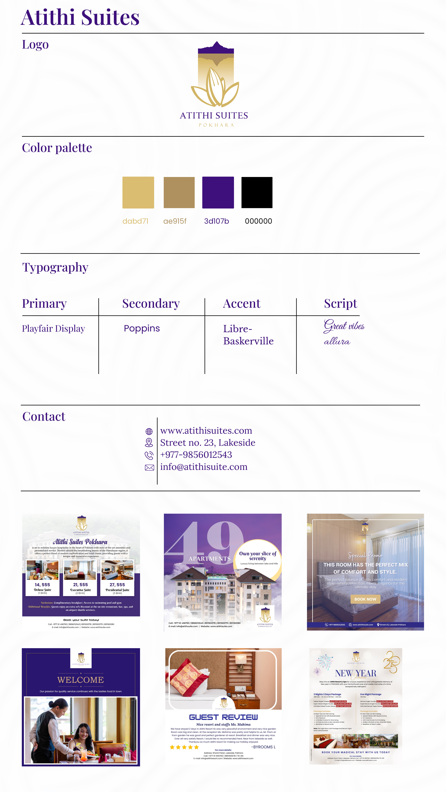
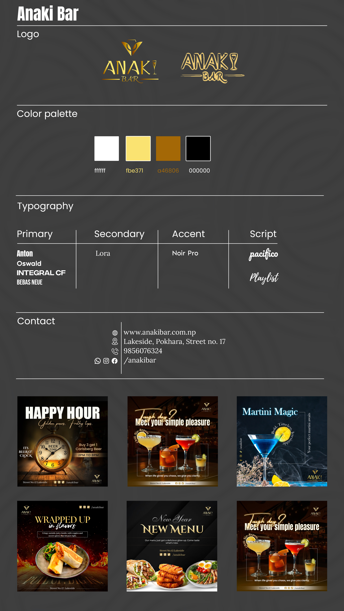
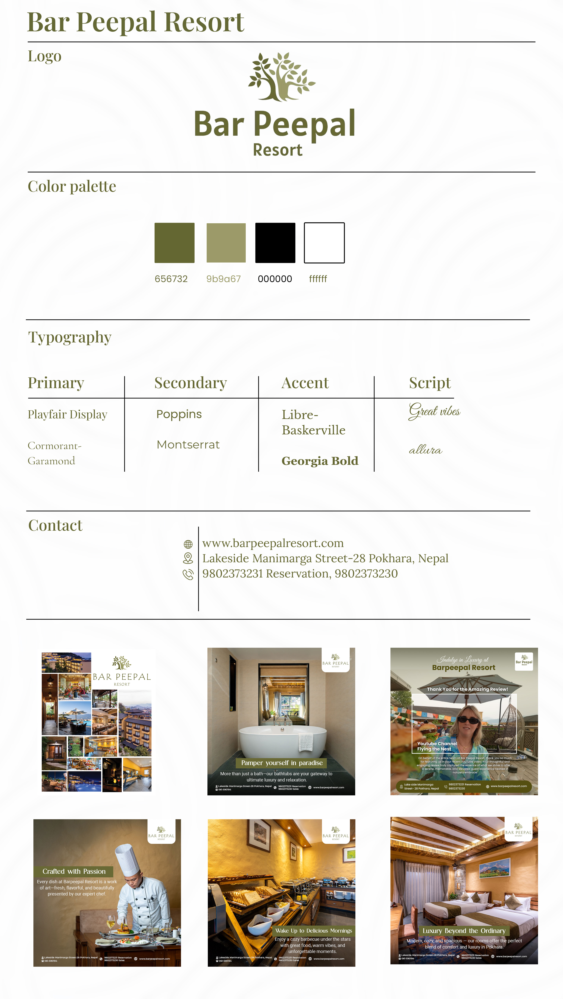
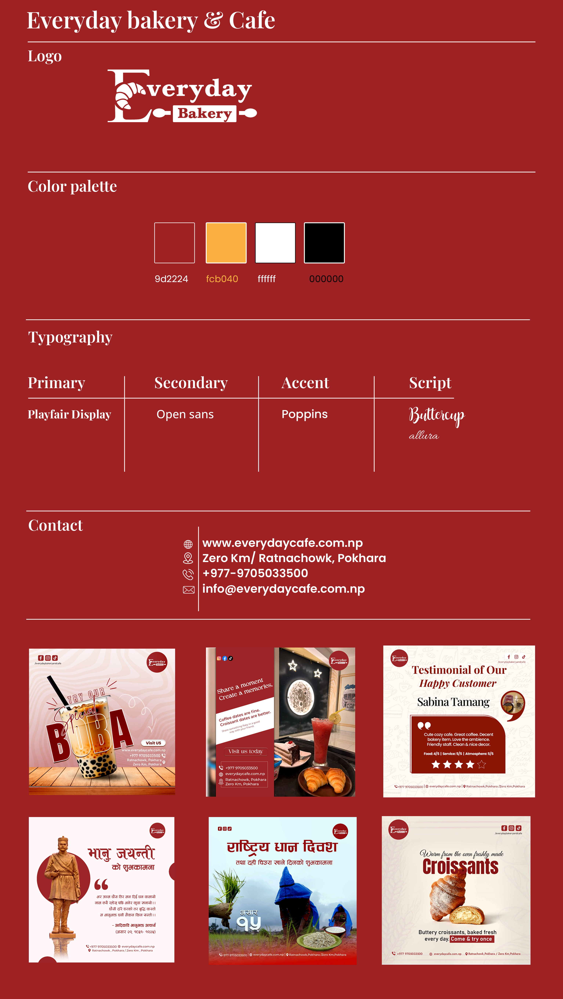
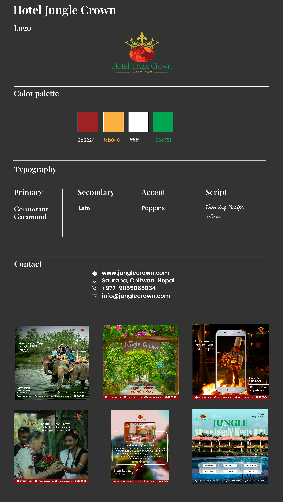
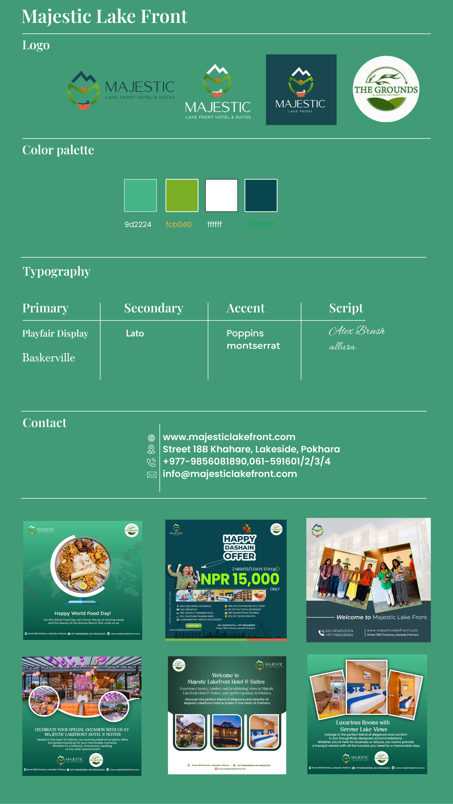
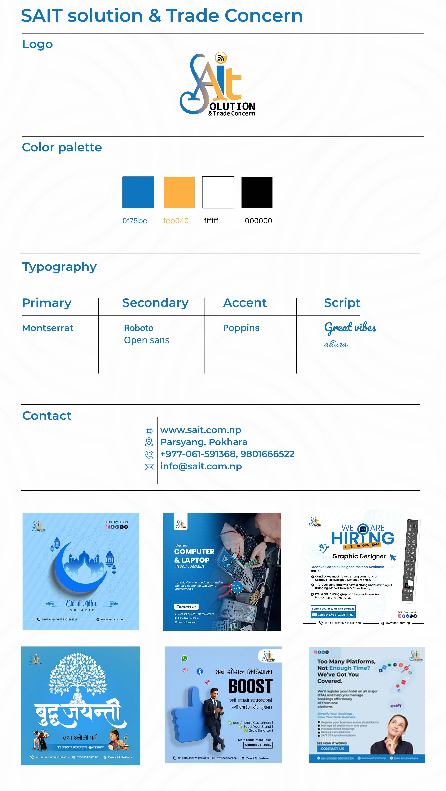
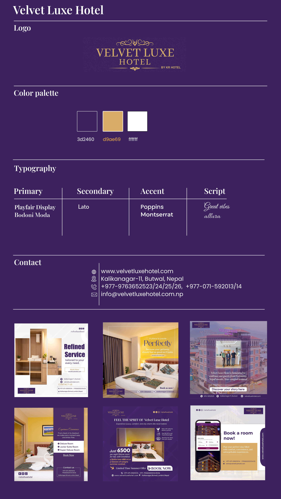

Brand Identity Systems
The Vision
A collection of comprehensive brand identity systems designed to establish consistency, trust, and professional presence across various industries. From hospitality to culinary arts and corporate services, each brand guide defines a unique visual DNA including logos, typography, color palettes, and marketing collateral standards.
The Strategy
Establishing a brand's visual system is about more than just a logo; it's about defining the rules for how a brand speaks to its audience. My approach focuses on creating timeless identity cores that are both versatile and scalable. These guidelines ensure that every touchpoint—whether a social media post, a business card, or a storefront—feels authentic and connected to the brand's primary mission.
Visual Guidelines Gallery







Featured Brands
- Atithi Suites: Luxury hospitality with an emphasis on elegance and premium service.
- Bar Peepal Resort: A nature-inspired retreat focused on tranquility and modern comfort.
- Everyday Bakery & Cafe: A vibrant, approachable identity for daily culinary experiences.
- Anaki Bar: Sleek, modern branding for high-end lounge and nightlife.
- SAIT Solution: Professional, technology-driven branding for corporate and IT services.